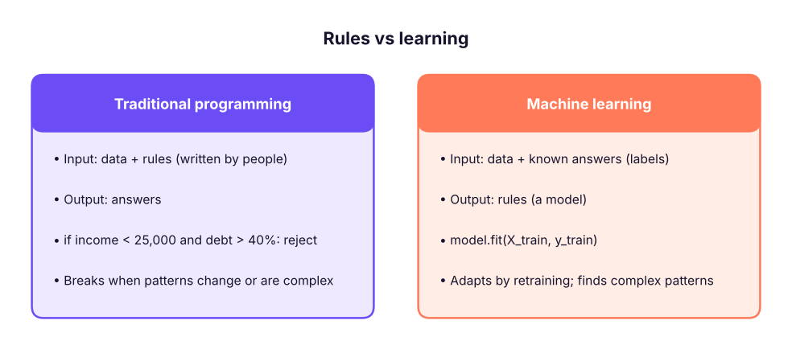
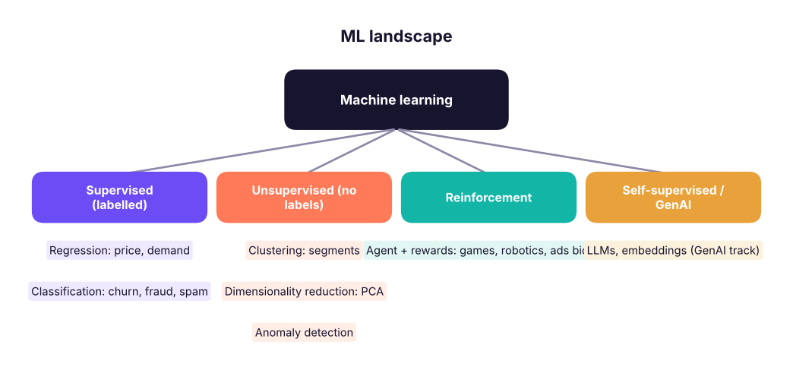
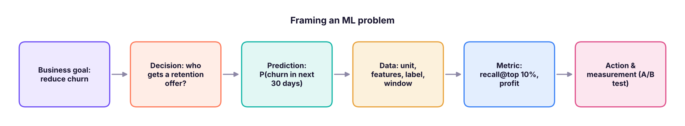
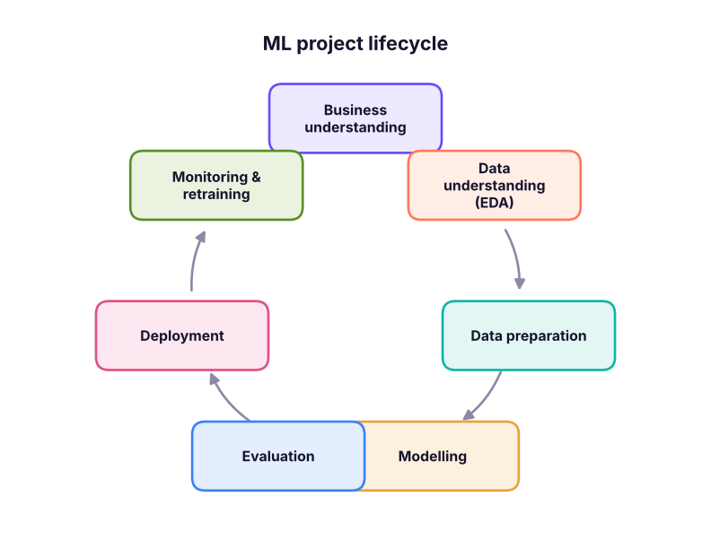
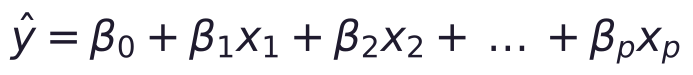
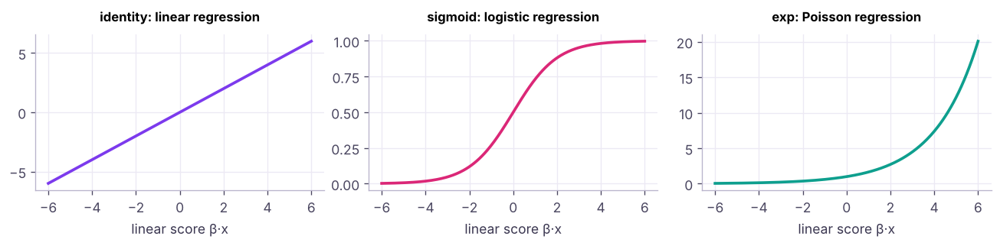
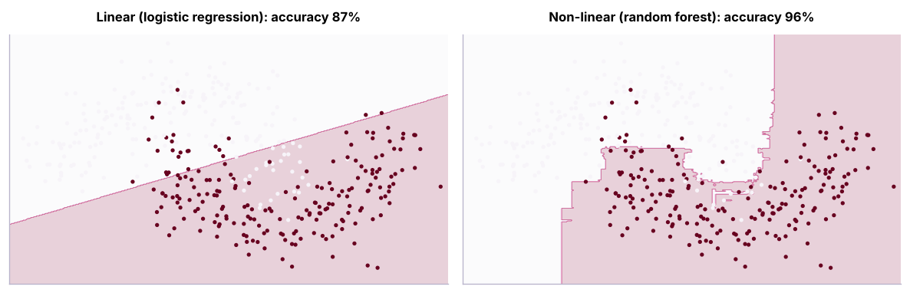

Introduction to Machine Learning: Types, Business Framing and the ML Lifecycle
What machine learning is and is not, how it differs from rules and statistics, supervised vs unsupervised vs reinforcement learning, regression vs classification vs clustering, turning a business problem into an ML problem, the end-to-end ML lifecycle (CRISP-DM to MLOps), linear vs non-linear models and link functions, and where GenAI fits.
- Define machine learning and distinguish it from rule-based systems and classical statistics
- Classify problems as supervised (regression, classification), unsupervised (clustering, dimensionality reduction) or reinforcement learning
- Translate a business question into target, features, unit of prediction, metric and decision
- Describe each stage of the ML lifecycle and common failure points
- Explain linear vs non-linear models, link functions, and when not to use ML
What is machine learning?
"A computer program is said to learn from experience E with respect to some task T and performance measure P if its performance at T, as measured by P, improves with experience E." (Tom Mitchell)
Instead of writing rules by hand, we give the computer examples (data) and let an algorithm learn the rules (a model) that map inputs to outputs.

| Statistics | Machine learning | |
|---|---|---|
| Main goal | Inference: understand relationships, test hypotheses | Prediction: accurate outputs on new data |
| Typical question | "Does overtime increase attrition, and by how much?" | "Which employees are likely to leave next quarter?" |
| Model choice | Interpretable, with assumptions | Whatever predicts best (with interpretability as needed) |
| Validation | p-values, confidence intervals | Held-out test data, cross-validation |
They overlap heavily: linear and logistic regression belong to both.
Types of machine learning

| Problem | Target type | Example | Algorithms (this track) |
|---|---|---|---|
| Regression | Number | House price, delivery time, demand | Linear, Ridge/Lasso, trees, boosting |
| Classification | Category | Churn yes/no, loan default, spam | Logistic, KNN, trees, RF, boosting, SVM, NB |
| Clustering | None | Customer segments | K-means, hierarchical, DBSCAN |
| Dimensionality reduction | None | Compress 50 features to 5 | PCA |
| Time-series forecasting | Number over time | Next month's sales | Seasonal naive, ETS, ARIMA, ML with lags |
| Recommendation / ranking | Ranked list | Products to show | Collaborative filtering, learning to rank |
import pandas as pd
h = pd.read_csv("house_prices.csv"); tc = pd.read_csv("telecom_churn.csv")
print("Regression target:", "price_lakh", "| examples:", h.price_lakh.head(3).tolist(), "| features:", [c for c in h.columns if c not in ("house_id", "price_lakh")])
print("Classification target: churn", tc.churn.value_counts().to_dict(), "| features:", [c for c in tc.columns if c not in ("customer_id", "churn")])Regression target: price_lakh | examples: [60.2, 60.9, 43.7] | features: ['city', 'area_sqft', 'bedrooms', 'bathrooms', 'age_years', 'distance_to_center_km', 'parking']
Classification target: churn {'No': 2228, 'Yes': 772} | features: ['senior_citizen', 'tenure_months', 'contract', 'internet_service', 'payment_method', 'monthly_charges', 'total_charges', 'support_calls']Vocabulary: a row is an observation/sample; input columns are features (X, predictors, independent variables); the column to predict is the target (y, label, dependent variable); the learned function is the model; using it on new data is inference/prediction.
From business problem to ML problem

| Question | Churn example |
|---|---|
| What decision will the prediction change? | Which 10% of customers receive a ₹200 retention offer |
| Unit of prediction | One customer, scored monthly |
| Target definition | Cancelled within 30 days after the scoring date |
| Features (only information available at prediction time) | Tenure, contract, charges, support calls in the previous 90 days |
| Success metric | Recall in the top 10%, net profit of the campaign |
| Baseline | Current rule: target month-to-month customers with 3+ calls |
| Constraints | Explainability for the retention team, privacy, weekly batch scoring |
Using information that would not be available at prediction time (for example "number of cancellation calls" recorded after the customer decided to leave) gives brilliant test scores and useless production models. Define a clear cut-off date for features and a later window for the label.
When not to use ML
Simple rules work; there is little data or no labels; mistakes are unacceptable and must be explained exactly; the pattern changes faster than you can retrain; or nobody will act on the predictions. Always compare with a simple baseline.
The ML lifecycle

| Stage | Key work | Typical tools |
|---|---|---|
| Business understanding | Goal, decision, metric, baseline, constraints | Workshops, documents |
| Data understanding | Sources, EDA, quality, label definition | SQL, pandas, plots (Python track) |
| Data preparation | Cleaning, encoding, scaling, feature engineering, train/test split | pandas, scikit-learn pipelines |
| Modelling | Train candidate models, tune hyperparameters | scikit-learn, XGBoost, LightGBM |
| Evaluation | Test-set metrics, error analysis, fairness, business value | metrics, SHAP |
| Deployment | Batch scoring or API, integration with apps | FastAPI, Docker, cloud ML platforms |
| Monitoring | Data drift, performance decay, retraining | MLflow, Evidently, dashboards |
In practice, most time goes to framing, data preparation and deployment, not to choosing algorithms.
Linear vs non-linear models and link functions
A linear model predicts with a weighted sum of features:

Generalised linear models pass that linear score through a link function so the output fits the target type:
| Target | Model | Link (inverse) | Output |
|---|---|---|---|
| Any real number | Linear regression | Identity | ŷ = score |
| Probability (0–1) | Logistic regression | Logit ⇄ sigmoid 1/(1 + e^(−score)) | P(y = 1) |
| Count (0, 1, 2…) | Poisson regression | Log ⇄ exp(score) | Expected count |

Non-linear models (decision trees, random forests, gradient boosting, KNN, neural networks) capture thresholds and interactions automatically, usually at the cost of interpretability.

Overfitting and generalisation (preview)
A model must work on new data. Memorising the training set (overfitting) fails in production; being too simple (underfitting) misses real patterns. We therefore always evaluate on data the model has not seen (lessons 8 and 15).
Where does GenAI fit?
Large language models are trained with self-supervised learning on huge text corpora, then adapted with instruction tuning and reinforcement learning from human feedback. In analytics they complement classical ML: LLMs read and write text, code and SQL; classical models remain best for structured, tabular prediction (churn, credit risk, demand), where gradient boosting usually wins. The GenAI track covers LLMs, RAG and agents.
Summary
- ML learns rules from data; statistics focuses on inference, ML on prediction, with much overlap.
- Supervised (regression, classification), unsupervised (clustering, PCA, anomalies), reinforcement and self-supervised (LLMs) learning.
- Frame first: decision, unit, target and time windows, leak-free features, metric, baseline.
- Lifecycle: business → data → preparation → modelling → evaluation → deployment → monitoring, iteratively.
- Linear models use link functions (identity, sigmoid, exp); non-linear models capture thresholds and interactions.
1. Predicting next month's sales in rupees is…
2. Grouping customers into segments without labels is…
3. What is data leakage?
4. Which link function does logistic regression use to output a probability?
5. Which stage often takes the most time in real ML projects?
6. When might you NOT use ML?
For each, state the ML type, target, unit, two leak-free features, the metric and the action: (1) predicting loan default at application; (2) forecasting daily units for each store; (3) grouping 5,000 products by sales pattern; (4) flagging suspicious card transactions in real time.
Show solution
(1) Classification; default within 12 months; applicant; income, debt-to-income; recall/precision at the approval threshold and expected loss; approve/decline/price. (2) Regression/forecasting; units per store-day; store-day; lagged sales, calendar/holidays; MAPE/WAPE; stock orders. (3) Clustering; none; product; weekly sales profile, price; silhouette + business sense; assortment strategy. (4) Classification (imbalanced); fraud label; transaction; amount vs customer average, merchant risk; precision/recall at alert capacity; block or step-up authentication.
Q: Explain machine learning to a non-technical person. Instead of writing rules ourselves, we show the computer many past examples with the right answers, and it learns patterns it can apply to new cases, like an employee learning from experience.
Q: Supervised vs unsupervised learning? Supervised learning uses labelled examples to predict a target; unsupervised learning finds structure such as groups or compressed representations without labels.
Q: How do you start an ML project? Clarify the business decision and success metric, define the target and prediction time, check data availability and leakage, set a simple baseline, then iterate on models.
Practise more online
Free, trusted places to test yourself on this topic. Links open the original site in a new tab.